Nankoku, Kochi: things to do, food and stays
Nankoku · Kochi
Nankoku
Highlighted on the Kochi map.
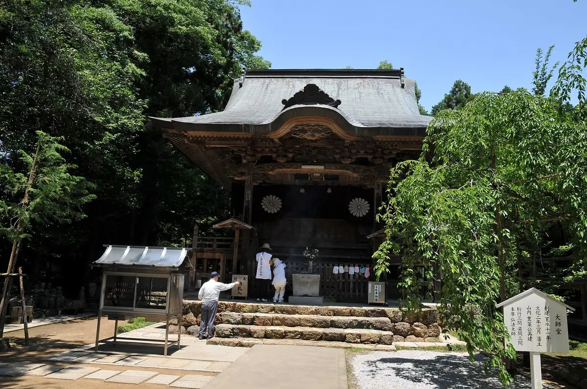
Stay
サザンシティホテル
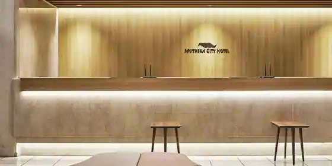
Sazan City Hotel
Hotel in Meiken, Nankoku with breakfast available and parking.
アールビジネスホテル
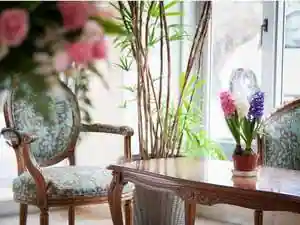
Aru Business Hotel
Hotel in Meiken, Nankoku with business travelers.
Dining
かいだ屋
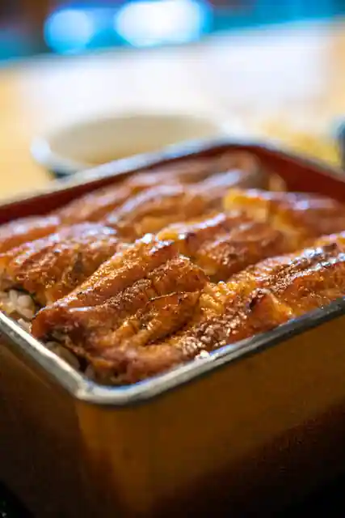
Kaida Ya
多国籍食堂 錆と煤
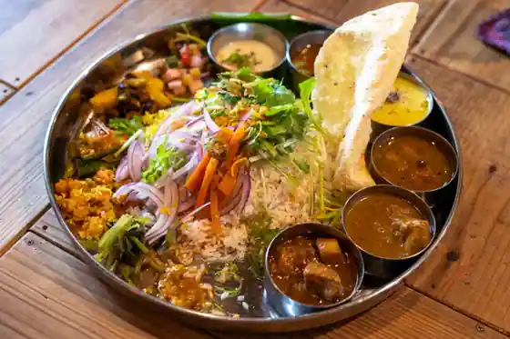
Takokuseki Shokudo Sabi To Susu
うなぎ処福
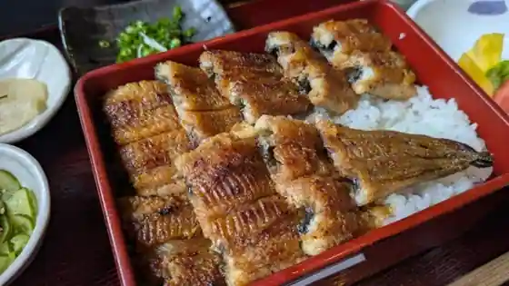
Unagi Tokoro Fuku
司 高知空港店
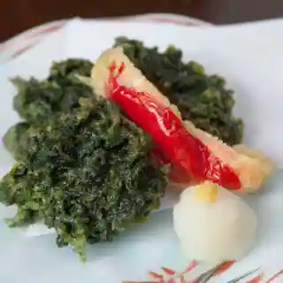
Tsukasa Kochi Kuko
うちんくの食卓
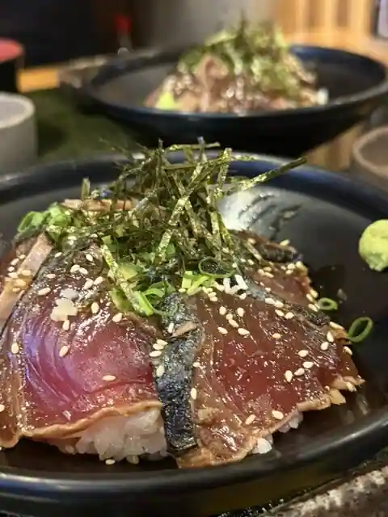
Uchinkuno Shokutaku
農園レストラン トリトン
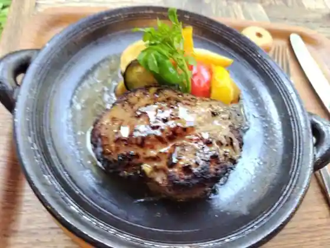
Noen Restaurant Toriton
國丸 南国店
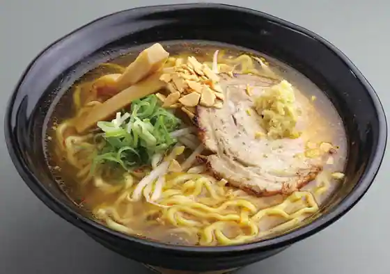
Kuni Maru Nangoku
景福宮
Keifuku Miya
鳥心 とりやき食堂
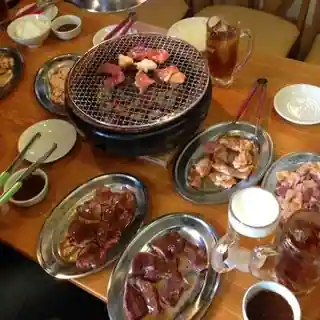
Tori Kokoro Toriyaki Shokudo
カフェレスト風良里
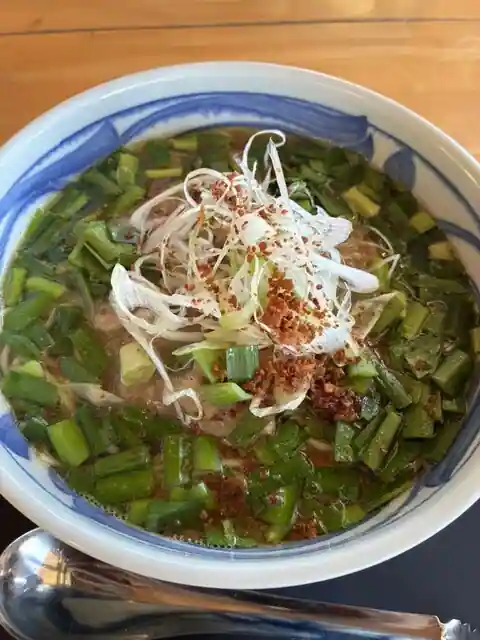
Cafe Resuto Kaze Ryo Sato
鰻料理 むなぎん
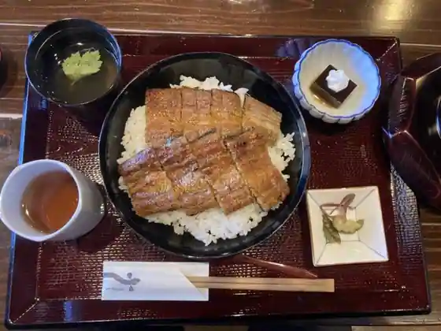
Unagi Ryori Munagin
三代目安兵衛 南国店
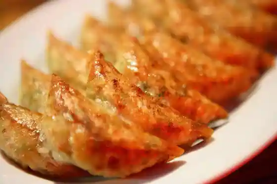
Sandaime Yasube Nangoku
ボラレ
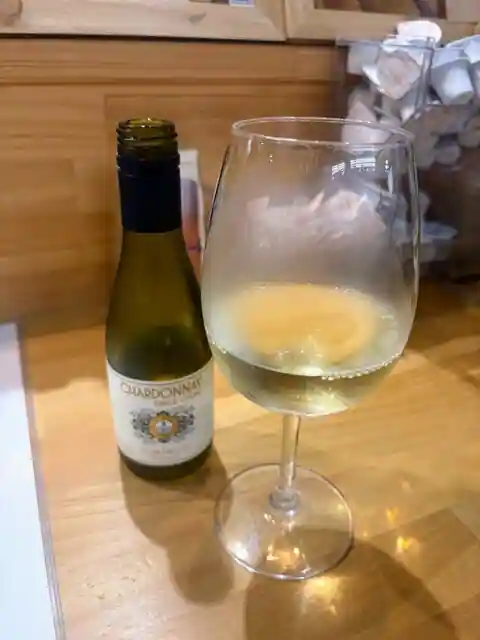
Borare
ICHIBA
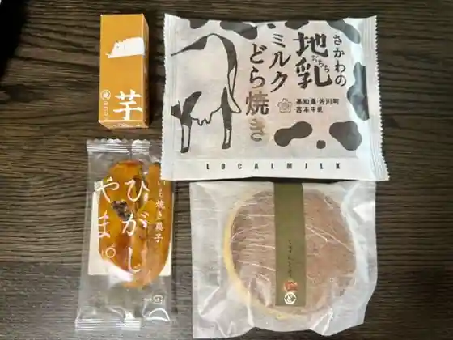
ICHIBA
道の駅南国 風良里アイスクリームショップ
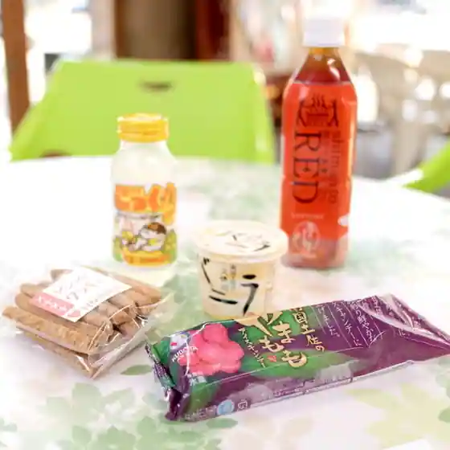
Michi No Eki Nangoku Kaze Ryo Sato Aisukurimushoppu
南国サービスエリア下り線 スナックコーナー・フードコート
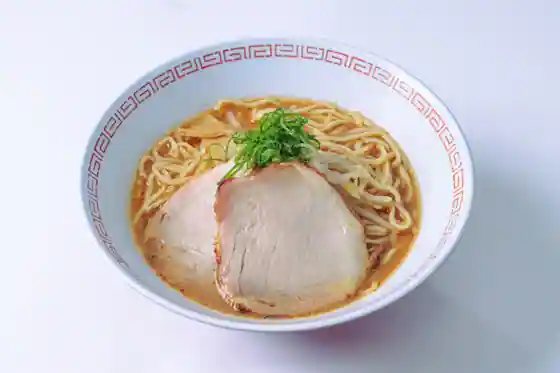
Nangoku Sabisueria Kudari Sen Sunakkukona Fudokoto
南国サービスエリア上り線スナックコーナー・フードコート
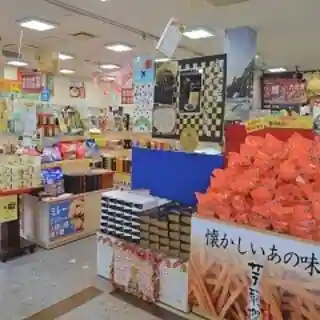
Nangoku Sabisueria Nobori Sen Sunakkukona Fudokoto
グドラック
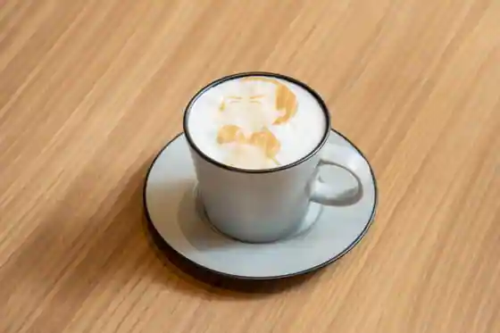
Gudorakku
レストランエリエール
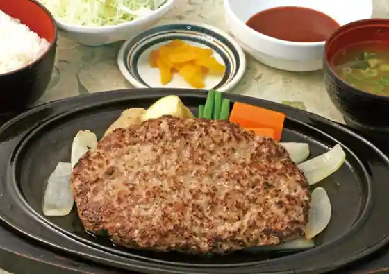
Restaurant Erieru
土佐まほろばそば
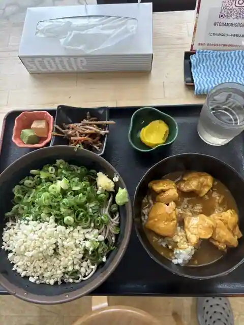
Tosa Mahorobasoba
モンシェルトントン
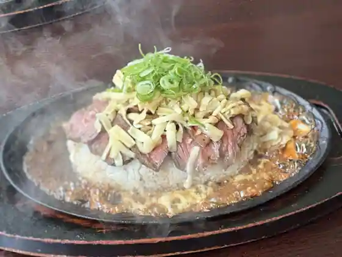
Monshierutonton
龍潭
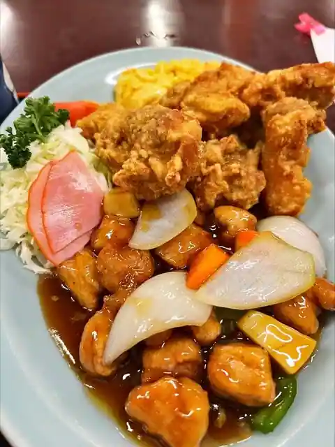
Ryu Tan
5019 PREMIUM FACTORY 南国店
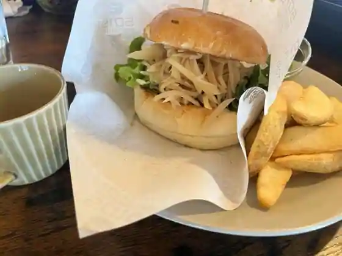
5019 PREMIUM FACTORY Nangoku
ログカフェ コットンタイム
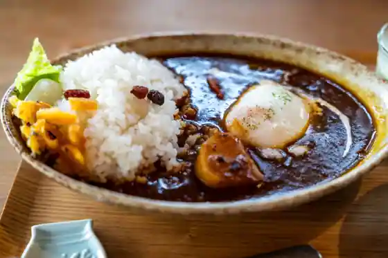
Rogu Cafe Kottontaimu
Sights
Tosa Kokubunji
Oko Shiro
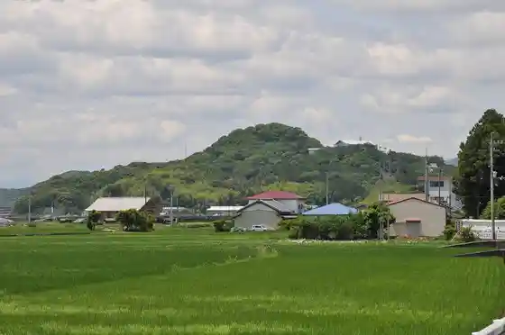
Kochi Prefectural Folk History Museum
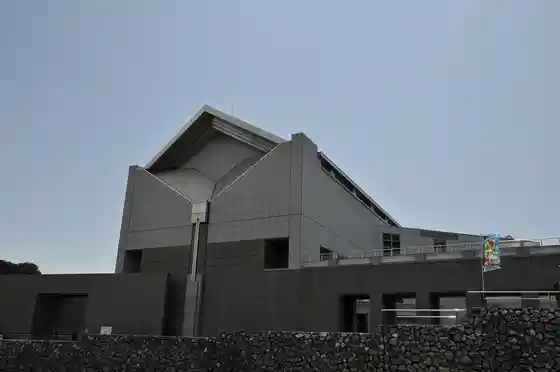
Kochi Ryoma Airport
Maehama Entai Gun
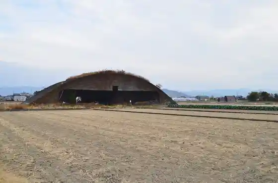
Gomen Eki